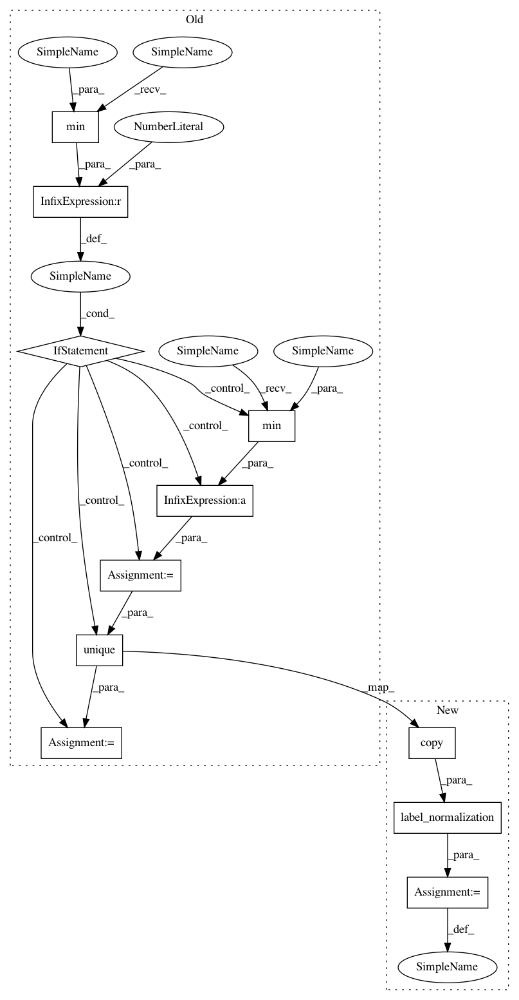

1a4c264cc9b2cb0bb89840ee9175177e86eef3ef,ot/da.py,BaseTransport,transform_labels,#BaseTransport#Any#,946
Before Change
// set nans to 0
transp[~ np.isfinite(transp)] = 0
if np.min(classes) != 0:
ys = ys - np.min(classes)
classes = np.unique(ys)
for c in classes:
D1[int(c), ys == c] = 1
// compute transported samples
After Change
// check the necessary inputs parameters are here
if check_params(ys=ys):
ysTemp = label_normalization(np.copy(ys))
classes = np.unique(ysTemp)
n = len(classes)
D1 = np.zeros((n, len(ysTemp)))
In pattern: SUPERPATTERN
Frequency: 3
Non-data size: 11
Instances
Project Name: rflamary/POT
Commit Name: 1a4c264cc9b2cb0bb89840ee9175177e86eef3ef
Time: 2020-04-08
Author: ievgen.redko@univ-st-etienne.fr
File Name: ot/da.py
Class Name: BaseTransport
Method Name: transform_labels
Project Name: rflamary/POT
Commit Name: 1a4c264cc9b2cb0bb89840ee9175177e86eef3ef
Time: 2020-04-08
Author: ievgen.redko@univ-st-etienne.fr
File Name: ot/da.py
Class Name: BaseTransport
Method Name: inverse_transform_labels
Project Name: rflamary/POT
Commit Name: 1a4c264cc9b2cb0bb89840ee9175177e86eef3ef
Time: 2020-04-08
Author: ievgen.redko@univ-st-etienne.fr
File Name: ot/da.py
Class Name: JCPOTTransport
Method Name: inverse_transform_labels